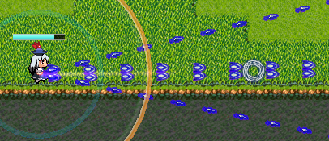
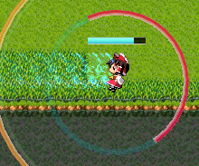

ゲームの操作
ボタンの割り当て
下記のようにキーなどが割り当てられています。
| 自機の移動 | キーボードの「W」「S」「A」「D」キー(それぞれ上、下、左、右に対応) または、ゲームパッドの方向入力 |
|---|---|
| 射撃方向の決定 | マウスポインタを動かす |
| 射撃 | マウス左クリック |
| ダッシュ | キーボードの左SHIFTキー または、ゲームパッドのボタン1(初期設定) |
| ボム | マウス右クリック または、ゲームパッドのボタン2(初期設定)か、 キーボードのスペースキー |
操作解説
移動と射撃
SMASH TOUHOUにおいては、移動と射撃は独立して操作できます。
マウスを動かすと照準が動きます。マウスの左ボタンを押すと、自機から照準のある方向に向けて弾が飛びます。押しっぱなしで自動連射してくれます。
キーボードのWSAD、またはパッドの方向入力で、自機の方を動かします。8方向へ移動できます。
WSADキーで敵や弾をやりすごしつつ、マウスで照準し、敵を倒す……というのが基本の立ち回りとなります。
自機からは常にマウスポインタに向けて、赤紫色のラインがうっすら伸びています。照準方向の把握にご利用ください。
ダッシュ
移動しながら左SHIFTキーでダッシュを発動します。

そのとき移動していた方向へ一定距離高速移動します。ダッシュ中、残像が出ている間は無敵です。ダッシュすると赤色のヒートゲージが一定量増加します。ダッシュせずにいると減りますが、連続でダッシュするとメーターがいっぱいになり、オーバーヒート状態となります(白く点滅)。こうなるとゲージが一度空になるまで次のダッシュはできません。
一度発動したダッシュは壁に当たってもキャンセルされません(隙になる)ので注意が必要です。
ボム
オレンジ色のボムメーターが満タン時(白く点滅で表示)、右クリックでボムを発動します。
ボム発動中はプレイヤーが無敵になるほか、ボム終了時に敵弾を消去します。性能はキャラにより大きく異なります。
ボムは複数個ストックすることができません。1発撃つとボムメーターは空っぽになります。ボムメーターは時間経過と共に増加していきます。また、敵を倒すと落とすBアイテムを拾うことでさらに少し増加させることができます。